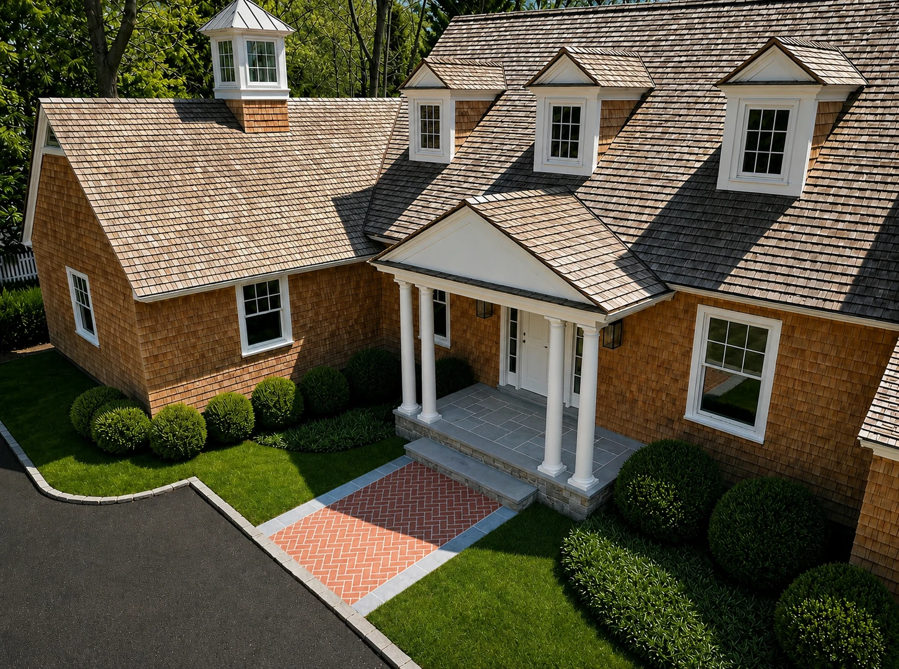
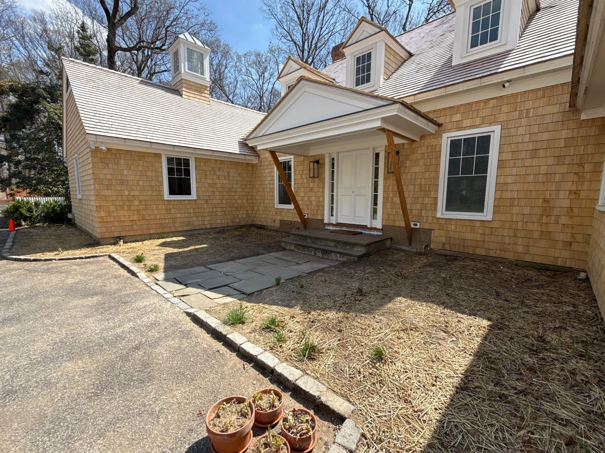
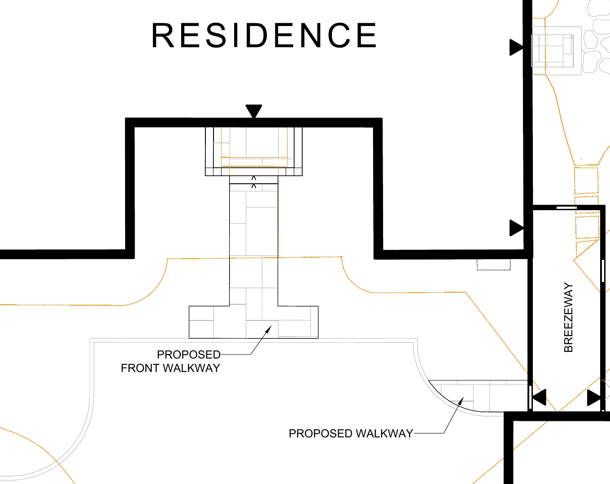
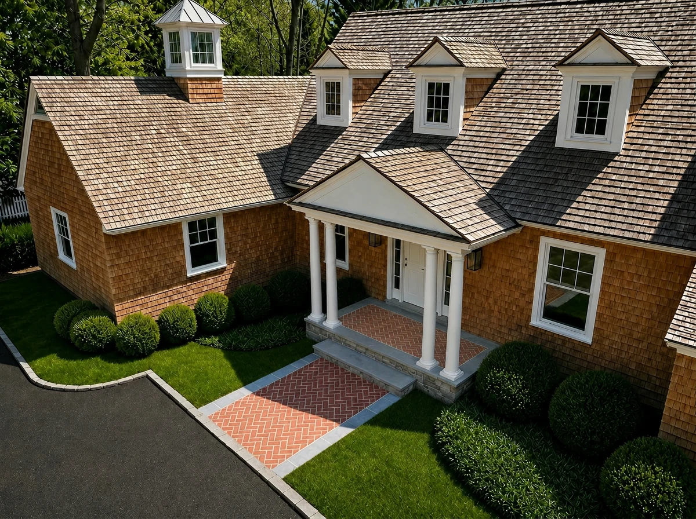
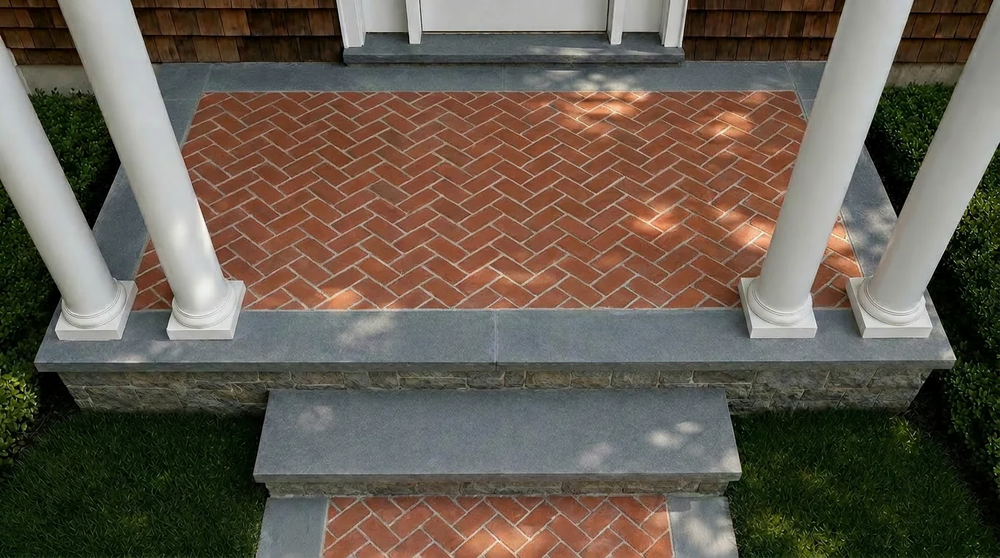
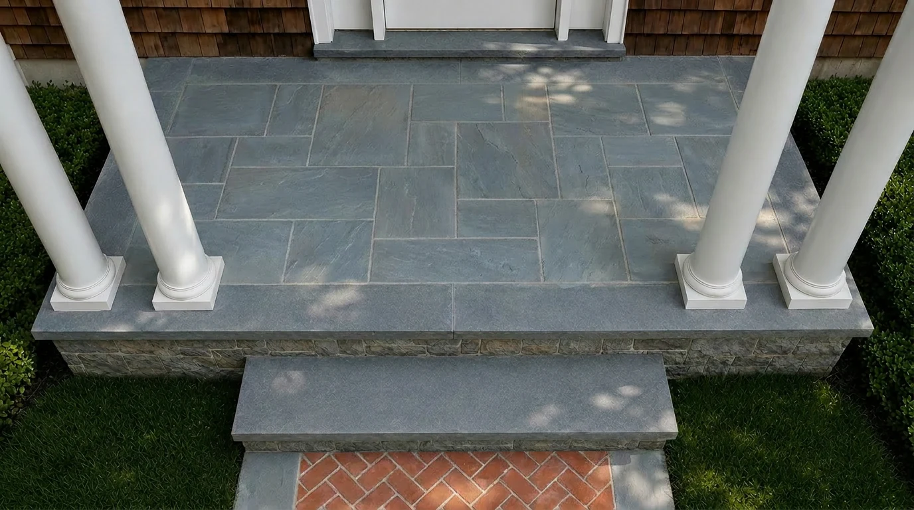

Entry materials
Make a material choice
easy to see.
- Year
- 2026
- Role
- Creative Design Intern
- Focus
- Material comparison · Visualization
- Tools
- Photoshop · Luma · ChatGPT

Begin with
the whole entrance.
The front porch is one part of a longer approach. The supplied site photo establishes the existing architecture, while the plan shows how the proposed walkway connects to the porch and adjacent circulation.
My visualization studies compare material choices within that setting. The plan supplies spatial context; the brick and stone finishes are explored in the images.




My role: interpretation and visualization. Landscape design direction, plans, and supplied site references: The Laurel Group design team. Renderings are AI-assisted concept studies.
One entrance.
Two different surfaces.
The brick study continues a herringbone pattern onto the porch within a gray border. The stone study changes the porch to a gray paved surface while retaining a brick approach. Similar views make the difference in pattern, color, and continuity easier to read.



Bring the decision
closer.
Closer views isolate the porch surface, threshold, border, and steps. They make the material junctions visible without the wider garden competing for attention. The paired studies communicate alternatives for discussion; no final material selection is claimed.



